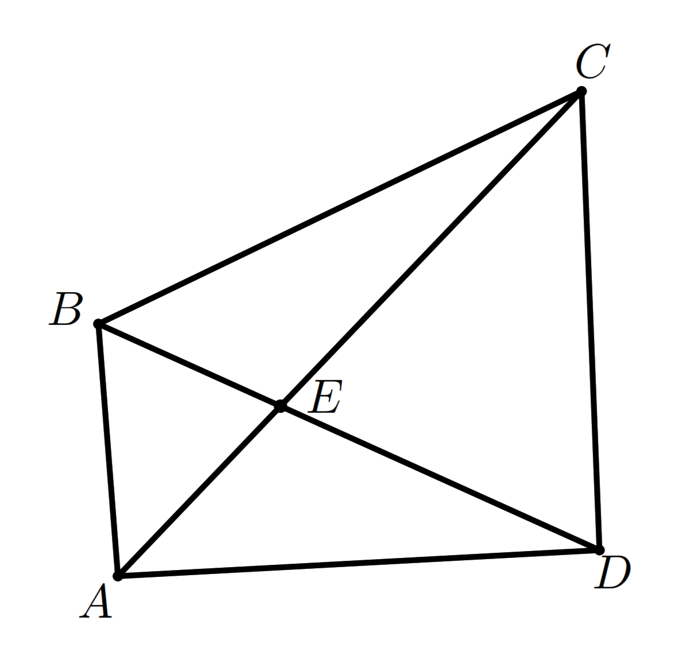
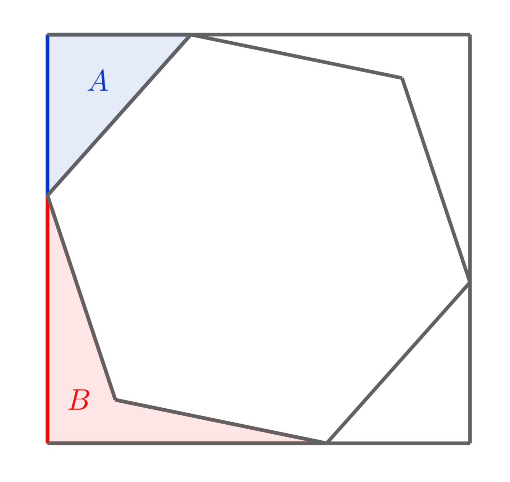
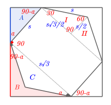
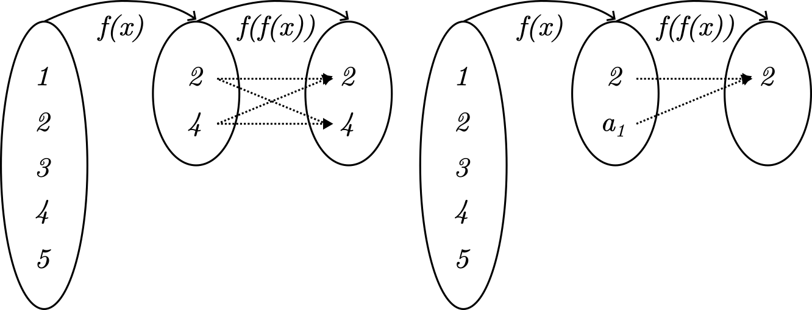

OSK Matematika SMA Tahun 2024 diadakan pada 26 Maret 2024 secara daring
Kemampuan Dasar
Sebuah persegi dibagi menjadi $2$ persegi panjang, seperti terihat pada gambar. Diketahui hasil penjumlahan kedua keliling persegi panjang tersebut adalah $60$, maka luas persegi adalah ...

Kita misalkan sisi persegi adalah $x$ dan salah satu sisi persegi panjang sebagai $y$ seperti pada gambar di bawah ini.
 Maka jumlah kelilingnya dapat kita nyatakan $$\begin{align*}
2(x+y)+2((x-y)+x)&=60\\
2x+2y+2x-2y+2x&=60\\
6x&=60\\
x&=10
\end{align*}$$ Jadi luas persegi adalah $x^2=100$.
Maka jumlah kelilingnya dapat kita nyatakan $$\begin{align*}
2(x+y)+2((x-y)+x)&=60\\
2x+2y+2x-2y+2x&=60\\
6x&=60\\
x&=10
\end{align*}$$ Jadi luas persegi adalah $x^2=100$.
Diketahui ada $6$ pilihan jalan yang dapat digunakan untuk berpergian dari kota $A$ ke kota $B$ dan ada $8$ pilihan jalan yang dapat digunakan untuk berpergian dari kota $B$ ke kota $C$. Jika seseorang akan berpergian dari kota $A$ ke kota $C$ melalui kota $B$ dan pulang kembali lagi ke kota $A$ melalui jalan-jalan yang berbeda dari ketika saat pergi, banyaknya cara memilih jalan yang dapat dilalui adalah ...
Kita buat slot untuk berangkat dan pulang dari kota \(A\) ke \(B\).
Begitu juga untuk berangkat dan pulang dari kota $B$ ke $C$.
Maka total kemungkinan jalan untuk berangkat dan pulang adalah $30\times 56=1680$.
| Berangkat | Pulang | Total |
|---|---|---|
| 6 | 5 | 30 |
| Berangkat | Pulang | Total |
|---|---|---|
| 8 | 7 | 56 |
Pada papan tertulis $90$ bilangan asli $1, 1, \cdots , 1, a, b$ (ada sebanyak $88$ bilangan $1).$ Hasil penjumlahan seluruh bilangan di papan adalah $A$ dan demikian juga hasil perkalian semua bilangan di papan adalah $A$. Nilai $A$ adalah ...
Perhatikan bahwa $A=88+a+b=ab$. Akibatnya $$\begin{align*}
ab&=88+a+b\\
ab-a-b&=88\\
(a-1)(b-1)&=89
\end{align*}$$
Karena 89 merupakan bilangan prima maka pasti satu diantara $a-1$ atau $b-1$ adalah $1$. Tanpa mengurangi keumuman $a=2$. Jadi $A=ab=2(90)=180$.
Misalkan $a, b$ bilangan bulat positif yang tidak memiliki faktor persekutuan positif selain $1$. Jika berlaku $\dfrac{1 + 2 + 3 + · · · + 104}{3 + 4 + 5 + · · · + 106}=\dfrac{a}{b},$ maka nilai $a + b$ adalah ...
Perhatikan bahwa $$\begin{align*}
\dfrac{a}{b}&=\dfrac{1 + 2 + 3 + · · · + 104}{3 + 4 + 5 + · · · + 106}\\
&=\dfrac{\frac{104\times 105}{2}}{\frac{(3+106)\times 104}{2}}\\
&=\dfrac{105}{109}
\end{align*}$$
Karena $\dfrac{105}{109}$ sudah tidak dapat disederhanakan lagi maka $a=105$ dan $b=109$. Jadi $a+b=105+109=214$.
Bilangan $OSK$ adalah bilangan $4$ angka yang tidak dimulai dengan angka $0$ dan hasil penjumlahan semua digitnya adalah $8$. Sebagai contoh, $2024$ merupakan bilangan $OSK$. Banyaknya bilangan $OSK$ adalah ...
Misalkan $x_1$ adalah digit pertama dari bilangan $OSK$ tersebut. Begitu juga $x_2,x_3,$ dan $x_4$ adalah berturut-turut digit kedua, ketiga, dan keempat. Maka banyaknya solusi sama dengan banyak kemungkinan dari persamaan $$x_1+x_2+x_3+x_4=8$$ dengan syarat $x_1\ge 1$ dan $x_2,x_3,x_4\ge 0$. (Hati-hati, fakta ini hanya berlaku ketika jumlah digitnya kurang dari 10.) Selanjutnya kita transform lagi masalah ini menjadi masalah bintang dan batang. Seperti halnya kita mau bagikan $8$ bintang ke dalam $4$ ruang yang dibatasi $3$ batang. Karena ada syarat $x_1\ge 1$, maka kita harus bagikan $1$ bintang terlebih dahulu kepada $x_1$. Sehingga bintang yang bebas untuk dibagikan sekarang adalah $7$ bintang. Artinya kita dapat hitung menggunakan rumus permutasi dengan beberapa objek yang sama (7* 3| atau *******|||). Jadi $\dfrac{10!}{7!3!}=\dfrac{10\times 9\times 8}{3\times 2}=120$.
Misalkan $u_1, u_2, u_3, \cdots$ suatu barisan geometri dengan $u_1>u_2$. Jika $u_2 = 8$ dan $u_5 + u_7 =\dfrac{17u_6}{4}$. Nilai dari $u_1$ adalah ...
Pertama kita olah $$\begin{align*}
u_5+u_7&=\dfrac{17}{4}u_6\\
ar^4+ar^6&=\dfrac{17}{4}ar^5 \text{ (bagi dengan }ar^4)\\
1+r^2&=\dfrac{17}{4}r\\
4r^2-17r+4&=0\\
\dfrac{1}{4}(4r-1)(4r-16)&=0
\end{align*}$$
Ditemukan $r=\dfrac{1}{4}$ atau $r=4$. Sekarang berdasarkan $ar=u_2=8$, maka untuk $r=\dfrac{1}{4}$ nilai $a=32$ dan untuk $r=4$ nilai $a=2$. Karena kedua kemungkinan $a>0$, maka dicocokkan dengan fakta bahwa $u_1>u_2$ maka $r=\dfrac{1}{4}$. Jadi nilai $a=32$.
Diberikan segiempat $ABCD$ dengan luas segitiga $AED$ sama dengan luas segitiga $BEC$. Jika $AB = 50, AE = 45,$ dan $AC = 108$, maka $CD$ adalah ...

Gunakan rumus luas menggunakan sin untuk melihat hubungan $$\begin{align*}
\dfrac{1}{2}BE(EC)\sin \angle BEC&=\dfrac{1}{2}AE(ED)\sin \angle AED\\
BE(EC)&=AE(ED)\\
\dfrac{BE}{ED}&=\dfrac{AE}{EC} (*)\\
&=\dfrac{45}{108-45}=\dfrac{5}{7}
\end{align*}$$
Jadi $\triangle ABE\sim\triangle ECD$ dari (*). Maka $\dfrac{AB}{CD}=\dfrac{5}{7}$. Jadi $CD=(50)\dfrac{7}{5}=70$.
Banyak bilangan dua digit $\overline{ab}$ dengan $a,b\ne 0$ sehingga $\overline{ab}+\overline{ba}$ merupakan kelipatan $66$ adalah ...
Perhatikan bahwa $\overline{ab}=10a+b.$ Akibatnya $$\begin{align*}
\overline{ab}+\overline{ba}&=(10a+b)+(10b+a)\\
&=11(a+b)
\end{align*}$$
Jika kita menginginkan bilangan ini menjadi kelipatan $66$, maka $a+b$ harus merupakan kelipatan 6. Artinya ini sama saja dengan masalah bintang dan batang $a+b=6$ dan $a\ge 1,b\ge 0$. Total ada 5 bintang (*) yang dapat dibagikan secara bebas dan satu batang (|) yang akan disusun. Jadi banyaknya bilangan yang dicari adalah $\dfrac{6!}{5!1!}=6$.
Misalkan $k$ adalah bilangan bulat positif terkecil kelipatan $2034$ yang memiliki $28$ faktor positif. Sisa hasil bagi $k$ oleh $100$ adalah ...
Pertama kita harus cari dulu faktorisasi prima dari $2034=2\cdot 3^2\cdot 113$. Karena $k$ kelipatan $2034$ maka $k=2^{1+a}\cdot 3^{2+b}\cdot 113^{1+c}$ dengan $a,b,c\ge 0$. Karena $k$ memiliki $28$ faktor positif maka $$28=(1+a+1)(2+b+1)(1+c+1).$$ Akibatnya $a=0,c=0,$ dan $b=4$ dan $k=2\cdot 3^6\cdot 113$. $$\begin{align*}
k&\equiv 2\cdot 3^6\cdot 113\text{ (mod }100)\\
&\equiv 2\cdot 729\cdot 13\text{ (mod }100)\\
&\equiv 2\cdot 29\cdot 13\text{ (mod }100)\\
&\equiv 54\text{ (mod }100)
\end{align*}$$
Misalkan $x, y$ bilangan real positif dengan $x>y$. Jika diketahui bahwa $x^2 + y^2 =\dfrac{545}{272}xy$, maka $\dfrac{x+y}{x-y}$ adalah ...
Langsung saja eksekusi $$\begin{align*}
x^2+y^2&=\dfrac{545}{272}xy\\
2x^2+2xy+y^2&=\left(\dfrac{545}{272}+2\right)xy\\
(x+y)^2&=\dfrac{1089}{272}xy
\end{align*}$$
Juga eksekusi $$\begin{align*}
x^2+y^2&=\dfrac{545}{272}xy\\
2x^2-2xy+y^2&=\left(\dfrac{545}{272}-2\right)xy\\
(x-y)^2&=\dfrac{1}{272}xy
\end{align*}$$
Maka $$\dfrac{x+y}{x-y}=\sqrt{\dfrac{(x+y)^2}{(x-y)^2}}=\sqrt{1089}=33.$$
Kemampuan Lanjut
Suatu segienam beraturan disisipkan kedalam sebuah persegi panjang seperti terlihat pada gambar dibawah ini. Jika luas $A$ dan $B$ berturut-turut adalah $24$ dan $23$, maka luas segienam beraturan adalah ...
Perhatikan bahwa $\triangle (A)$ dan $\triangle (B+C)$ sebangun. Sehingga $$\begin{align*}
\left(\dfrac{s}{s\sqrt{3}}\right)^2&=\dfrac{A}{B+C}\\
\dfrac{1}{3}&=\dfrac{24}{23+C}\\
C&=49
\end{align*}$$
Luas segienam yang sedang dicari adalah $6(I+II)=$$6C=$$6\cdot 49=$$294.$


Banyak himpunan bagian $A$ dari $\lbrace 24, 25, 26, \cdots , 35\rbrace$ sehingga hasil penjumlahan unsur terbesar dan terkecil dari $A$ sama dengan $59$ adalah ...
Pertama kita lihat kasus dimana $24$ merupakan unsur terkecil dan $35$ adalah unsur yang terbesar. Maka $25,26,\cdots,34$ mempunyai dua kemungkinan apakah dia masuk ke dalam $A$ atau tidak masuk. Sehingga banyaknya kemungkinan untuk kasus ini adalah $2^{10}$.
Selanjutnya kasus kedua $25$ sebagai unsur terkecil dan $34$ sebagai unsur terbesar. Maka $26,27,\cdots,33$ juga punya dua kemungkinan seperti kasus sebelumnya. Maka banyaknya kemungkinan untuk kasus ini adalah $2^8$.
Ini akan berlanjut hingga $29$ sebagai unsur terkecil dan $30$ sebagai unsur terbesar. Dimana kasus ini hanya memiliki satu kemungkinan atau $2^0$. Jadi banyak himpunan bagian $A$ yang mungkin adalah $$\begin{align*} 2^{10}+2^8+\cdots+2^0&=\dfrac{2^{12}-1}{2^2-1}\\ &=1365 \end{align*}$$
Selanjutnya kasus kedua $25$ sebagai unsur terkecil dan $34$ sebagai unsur terbesar. Maka $26,27,\cdots,33$ juga punya dua kemungkinan seperti kasus sebelumnya. Maka banyaknya kemungkinan untuk kasus ini adalah $2^8$.
Ini akan berlanjut hingga $29$ sebagai unsur terkecil dan $30$ sebagai unsur terbesar. Dimana kasus ini hanya memiliki satu kemungkinan atau $2^0$. Jadi banyak himpunan bagian $A$ yang mungkin adalah $$\begin{align*} 2^{10}+2^8+\cdots+2^0&=\dfrac{2^{12}-1}{2^2-1}\\ &=1365 \end{align*}$$
Untuk setiap bilangan asli $n$, misalkan $f (n)$ menyatakan faktor ganjil terbesar dari $n$ dan $$p(n) = f (n) + f (n + 1) + \cdots + f (2n).$$ Jika $p(n) = 8145$, maka $n$ adalah ...
Perhatikan bahwa $f(2n)=f(n)$ untuk setiap $n$ bilangan asli. Andaikan $f(n+l)=f(n+k)$ dengan $1\le l\le k\le n$. Misalkan $n+l=2^a\cdot l_1$ dan $n+k=2^b\cdot k_1$ dengan masing-masing $l_1$ dan $k_1$ ganjil. Karena $f(n+l)=f(n+k)$, maka $l_1=f(n+l)=f(n+k)=k_1$. Artinya $$n+k=2^b\cdot k_1\ge 2\cdot 2^a\cdot l_1=2(n+l)>2n.$$ Tidak mungkin. Akibatnya pastilah $f(n+1),$ $f(n+2),$ $\cdots,$ $f(2n)$ tidak ada yang bernilai sama. Maka $$\begin{align*}
&f(n+1)+f(n+2)+\cdots +f(2n)\\
&=1+3+\cdots+(2n-1)\\
&=\dfrac{(2n-1+1)}{2}(n)\\
&=n^2
\end{align*}$$
Maka $8145=n^2+f(n)$. Bilangan kuadrat paling dekat dengan $8145$ adalah $8100=90^2.$ Jika $n=90$, maka $$n^2+f(n)=8100+45=8145.$$ Jika $n<90$, maka $n^2\le 7921$ dan $f(n)\le 89$. Akibatnya $$n^2+f(n)\le 7921+89=8010.$$ Jika $n>90$, maka $n^2\ge 8281.$ Tidak mungkin. Jadi $n$ yang memenuhi hanyalah $90$.
Diberikan suku banyak $P (x) = x^3 + Dx^2 + Ex + 1$ dan $P (−1) = 4$. Jika $a, b, c$ merupakan akar-akar dari $P (x) = 0$ dan memenuhi $(a^2 − bc)(b^2 − ca)(c^2 − ab) = 40$. Maka nilai dari $(D + E)^2$ adalah ...
Menggunakan identitas Vieta kita bisa dapatkan
$\begin{array}{rl}a+b+c&=-D\\ab+ac+bc&=E\\abc&=-1\end{array}$
Gunakan $P(-1)$$=4,$ maka akan didapatkan $D-$$E=4.$ Selanjutnya perhatikan $$\begin{array}{rl}(a^2-bc)(b^2-ac)(c^2-ab)&=40\\(a^3-abc)(b^3-abc)(c^3-abc)&=40abc\\(a^3+1)(b^3+1)(c^3+1)&=-40\\a^3b^3c^3+a^3+b^3+c^3+a^3b^3+a^3c^3+b^3c^3+1&=-40\\a^3+b^3+c^3+a^3b^3+a^3c^3+b^3c^3&=-40\hspace{1cm}(1)\end{array}$$
$\begin{array}{rl}a+b+c&=-D\\ab+ac+bc&=E\\abc&=-1\end{array}$
Gunakan $P(-1)$$=4,$ maka akan didapatkan $D-$$E=4.$ Selanjutnya perhatikan $$\begin{array}{rl}(a^2-bc)(b^2-ac)(c^2-ab)&=40\\(a^3-abc)(b^3-abc)(c^3-abc)&=40abc\\(a^3+1)(b^3+1)(c^3+1)&=-40\\a^3b^3c^3+a^3+b^3+c^3+a^3b^3+a^3c^3+b^3c^3+1&=-40\\a^3+b^3+c^3+a^3b^3+a^3c^3+b^3c^3&=-40\hspace{1cm}(1)\end{array}$$
Banyaknya barisan bilangan bulat positif dengan enam suku $a_1, a_2, a_3, a_4, a_5, a_6$ yang mungkin sehingga $1 \le a_1, a_2, a_3, a_4, a_5, a_6 \le 4$ dan tidak ada dua suku berurutan yang jumlahnya $4$ adalah ...
Kita akan gunakan PIE (prinsip inklusi eksekusi) untuk mengerjakan soal ini. Pertama harus kita sadari bahwa total seluruh kemungkinan tanpa syarat dan batasan adalah $4^6=4096$ karena setiap $a_i$ memiliki 4 kemungkinan yaitu $\lbrace 1,2,3,4\rbrace.$ Selanjutnya seluruh kemungkinan ini akan kita kurangi dengan komplemen kejadian yang ditanyakan yaitu minimal ada dua suku yang berurutan yang jumlahnya adalah $4.$ Nah disinilah menghitungnya jadi lumayan ribet karena harus dibagi menjadi beberapa kasus. Sebelum dibahas per kasus kita juga perlu sadari dulu bahwa ada 5 pasangan suku yang berurutan yaitu $(a_1,a_2),$ $(a_2,a_3),$ $(a_3,a_4),$ $(a_4,a_5),$ dan $(a_5,a_6).$
-
Minimal ada satu pasangan dengan jumlah $4.$
Satu pasangan dengan jumlah $4$ mempunyai $3$ kemungkinan yaitu $(1,3),$ $(2,2),$ dan $(3,1).$ Sedangkan $4$ suku barisan yang tidak termasuk ke dalam pasangan tersebut mempunyai $4$ kemungkinan nilai yaitu dari $1$ sampai $4$. Maka banyaknya kemungkinan dengan minimal ada satu pasangan dengan jumlah $4$ adalah $5\cdot 3\cdot 4^4=3840.$ -
Minimal ada dua pasangan dengan jumlah $4.$
Dalam kasus ini kita perlu pecah lagi menjadi dua sub bagian agar perhitungan menjadi mudah.- Ketika dua pasangan ini beririsan seperti $(a_1,a_2)$ dan $(a_2,a_3).$ Maka yang terjadi $a_3$ pasti akan sama dengan $a_1.$ Jadi banyaknya kemungkinan ada $4\cdot 3\cdot 4^3=768.$
- Ketika dua pasangan ini tidak beririsan seperti $(a_1,a_2)$ dan $(a_3,a_4).$ Kejadian ini membuat bebas pasangan kedua untuk menentukan nilainya. Jadi banyaknya kemungkinan adalah $6\cdot 3^2\cdot 4^2=864.$
-
Minimal ada tiga pasangan dengan jumlah $4.$
Kasus ini perlu dipecah jadi 3 bagian.- Ketika ketiga pasangan yang berdekatan selalu mempunyai irisan seperti $(a_1,a_2),$ $(a_2,a_3),$ dan $(a_3,a_4).$ Maka ketika $(a_1,a_2)$ sudah dipilih, $a_3$ akan sama dengan $a_1$ dan $a_4=a_3.$ Sehingga banyaknya kemungkinan adalah $3\cdot 3\cdot 4^2=144.$
- Ketika dua pasangan beririsan dan satu pasangan lainnya tidak seperti $(a_1,a_2)$ dan $(a_2,a_3)$ beririsan dan $(a_4,a_5)$ tidak. Kasus seperti ini ada sebanyak 6. Jadi banyaknya kemungkinan adalah $6\cdot 3^2\cdot 4=216.$
- Kasus terakhir adalah ketika ketiga pasangan tidak pernah beririsan seperti $(a_1,a_2),$ $(a_3,a_4),$ dan $(a_5,a_6).$ Maka banyaknya kemungkinan adalah $1\cdot 3^3\cdot 4^0=27.$
-
Minimal ada empat pasangan dengan jumlah $4.$
Kasus ini kita pecah jadi 2 bagian.- Pertama, ketika setiap dua pasangan berurutan selalu beririsan seperti $(a_1,a_2),$ $(a_2,a_3),$ $(a_3,a_4),$ dan $(a_4,a_5).$ Maka banyaknya kemungkinan ada $2\cdot 3\cdot 4=24.$
- Kedua, ketika ada yang tidak beririsan seperti $(a_1,a_2),$ $(a_2,a_3),$ $(a_3,a_4),$ dan $(a_5,a_6).$ Maka banyaknya kemungkinan adalah $3\cdot 3^2\cdot 4^0=27.$
-
Terakhir, semua pasangan berjumlah $4.$
Tentu banyaknya kemungkinan pada kasus ini adalah $3.$
Jadi keseluruhan berdasarkan PIE dapat kita hitung $$\begin{align*}
4096-(3840-1632+387-51+3)=1549.
\end{align*}$$
Diberikan sebuah segitiga $ABC$ yang siku-siku pada sudut $B$. Lingkaran $\omega$ merupakan lingkaran dalam segitiga $ABC$ yang menyinggung sisi $BC$ pada titik $D$. Titik $E$ terletak pada $\omega$ sehingga $DE$ merupakan diameter dari $\omega$. Perpanjangan garis $AE$ memotong $\omega$ kedua kalinya pada titik $F$, dan memotong sisi $BC$ pada titik $G$. Apabila $EF = 3$, dan $F G = 4$, maka panjang $AE$ dapat dinyatakan dalam bentuk $\dfrac{p\sqrt{q}}{r}$, dengan $p,q,r$ merupakan bilangan bulat positif, satu-satunya faktor kuadrat dari $q$ adalah $1$, dan $FPB(p,r)=1$. Nilai dari $p + q + r$ adalah ...
Diketahui $a, b, c$ bilangan real positif yang memenuhi $a + b + c = \dfrac{32}{a} + \dfrac{32}{b} + \dfrac{32}{c} = 24.$ Nilai terbesar yang mungkin dicapai oleh $\dfrac{a^2+32}{a} $ adalah ...
Untuk setiap bilangan real $x$, notasi $\lfloor x\rfloor$ menyatakan bilangan bulat terbesar yang kurang dari atau sama dengan $x$. Sebagai contoh $\lfloor 1, 1\rfloor = 1$, $\lfloor 3\rfloor = 3$, dan sebagainya. Jika ada tepat sebanyak $1000$ bilangan berbeda pada barisan $\left\lfloor\dfrac{1^2}{2024}\right\rfloor,$ $\left\lfloor\dfrac{2^2}{2024}\right\rfloor,$ $\left\lfloor\dfrac{3^2}{2024}\right\rfloor,$ $\cdots ,$ $\left\lfloor\dfrac{n^2}{2024}\right\rfloor.$ Maka $n$ adalah ...
Perhatikan bahwa $\left\lfloor\dfrac{1^2}{2024}\right\rfloor=$$\left\lfloor\dfrac{2^2}{2024}\right\rfloor$. Artinya ada beberapa yang akan bernilai sama. Sekarang kita akan cari batas sehingga akan berlaku $\left\lfloor\dfrac{n^2}{2024}\right\rfloor<$$\left\lfloor\dfrac{(n+1)^2}{2024}\right\rfloor.$ Maka selisih antar bilangan kuadrat ini harus lebih dari $2024$. Atau $$\begin{align*}
(n+1)^2-n^2>2n+1>2024\\
n>\dfrac{2023}{2}\\
n\ge 1012
\end{align*}$$ Artinya jika $n\ge 1012,$ maka nilai sukunya akan terus berbeda. Sekarang kita lihat $\left\lfloor\dfrac{1012^2}{2024}\right\rfloor=506.$ Maka kurang $493$ suku berbeda lagi. Maka $n$ terkecil sehingga ada $1000$ suku yang berbeda adalah $1012+$$493=$$1505.$
Banyaknya pemetaan $f : \lbrace 1, 2, 3, 4, 5\rbrace \to \lbrace 1, 2, 3, 4, 5\rbrace$ sehingga $f (f (x)) \in \lbrace 2, 4\rbrace$ untuk setiap $x \in \lbrace 1, 2, 3, 4, 5\rbrace$ adalah ...
Kita akan menghitung banyaknya $f(x)$ dengan membaginya menjadi beberapa kasus sesuai dengan banyaknya anggota dari $Peta(f)$. $Peta(f)$ adalah kumpulan dari $y=f(x).$
- Kasus $1$: Banyaknya anggota $Peta(f)$ adalah $1$ atau $\#Peta(f)=1.$
Karena $f(f(x))\in\lbrace 2,4\rbrace,$ maka semuanya harus dipetakan ke $2$ atau $4.$ Jadi ada $2$ kemungkinan pada kasus ini. - Kasus $2$: $\#Peta(f)=2.$
Maka $Peta(f)=\{2,4\}$ atau $Peta(f)=\{2,a_1\}$ atau $Peta(f)=\{4,a_1\}$ dengan misalkan $\{a_1,a_3,a_5\}= \{1,3,5\}.$- Jika $Peta(f)=\{2,4\},$ maka banyaknya kemungkinan dapat kita hitung menjadi banyaknya cara membagi $5$ orang ke dalam $2$ kelompok, dimana setiap kelompok memiliki anggota minimal $1.$ Maka banyaknya kemungkinan adalah $\binom{5}{1}+$$\binom{5}{2}+$$\binom{5}{3}+$$\binom{5}{4}=$$2^5-2=30.$
- Jika $Peta(f)=\{2,a_1\},$ maka pasti $f(a_1)=$$f(2)=2.$ Hal ini dikarenakan $f(f(x))\in\{2,4\}.$ Seperti sebelumnya banyaknya fungsi yang sedemikian dapat dihitung dengan membagi $3$ orang lainnya, yaitu $\{4,a_3,a_5\}$ menjadi $2$ kelompok, kelompok pertama yang akan dipetakan ke $a_1$ dan kelompok kedua akan dipetakan ke $2.$ Kelompok pertama minimal beranggotakan $1$ orang. Maka banyaknya kemungkinan $\binom{3}{1}+$$\binom{3}{2}+$$\binom{3}{3}=$$2^3-1=7.$ Karena $a_1$ punya tiga kemungkinan maka total ada $3\cdot 7=21$ kemungkinan.
- Jika $Peta(f)=\{4,a_1\},$ maka pasti $f(a_1)=$$f(4)=4.$ Maka banyaknya kemungkinan sama seperti sebelumnya yaitu $21.$ Jadi total kemungkinan untuk Kasus $2$ adalah $30+21\cdot 2=72.$
- Kasus $3$: $\#Peta(f)=3.$
Maka $Peta(f)=\{2,4,a_1\}$ atau $Peta(f)=\{2,a_1,a_3\}$ atau $Peta(f)=\{4,a_1,a_3\}$ dengan misalkan $\{a_1,a_3,a_5\}= \{1,3,5\}.$- Jika $Peta(f)=\{2,4,a_1\},$ maka $f(Peta(f))=\{2,4\}$ atau $f(Peta(f))=\{2\}$ atau $f(Peta(f))=\{4\}.$ Jika $f(Peta(f))=\{2,4\},$ maka banyaknya fungsi dari $\{2,4,a_1\}\to\{2,4\}$ adalah $\binom{3}{1}+$$\binom{3}{2}=6.$ Sekarang kita hanya perlu mempertimbangkan $f(a_3)$ dan $f(a_5)$. Karena salah satu dari mereka harus sama dengan $a_1$ maka banyaknya kemungkinan adalah $\binom{2}{1}\cdot 2+$$\binom{2}{2}\cdot 1=5.$ Jadi keseluruhan kemungkinan ada $3\cdot 6\cdot 5=90.$ Jika $f(Peta(f))=\{2\}$ atau $f(Peta(f))=\{4\}$, keduanya memiliki banyak kemungkinan yang sama. Kita hitung saja untuk $f(Peta(f))=\{2\}.$ Maka $f(2)=$$f(4)=$$f(a_1)=2.$ Artinya masing-masing dari $a_3$ dan $a_5,$ harus dipetakan ke $4$ dan $a_1.$ Jadi keseluruhan kemungkinan ada $3\cdot 2=6.$ Akibatnya jika $Peta(f)=\{2,4,a_1\},$ maka banyaknya kemungkinan adalah $90+6\cdot 2=102.$
- Jika $Peta(f)=\{2,a_1,a_3\}$ atau $Peta(f)=\{4,a_1,a_3\},$ maka keduanya memiliki banyak kemungkinan yang sama. Untuk itu, kita perlu hanya perlu menghitung $Peta(f)=\{2,a_1,a_3\}.$ Maka jelas $f(Peta(f))=\{2\}.$ Maka $4$ dan $a_5$, masing-masing harus dipasangkan dengan $a_1$ dan $a_3.$ Maka total ada $2$ kemungkinan. Jadi keseluruhan ada $2\cdot 2=4$ kemungkinan.
- Kasus $4$: $\#Peta(f)=4.$
Maka $Peta(f)=\{2,4,a_1,a_3\}$ atau $Peta(f)=\{2,a_1,a_3,a_5\}$ atau $Peta(f)=\{4,a_1,a_3,a_5\}$ dengan misalkan $\{a_1,a_3,a_5\}= \{1,3,5\}$.- Jika $Peta(f)=\{2,4,a_1,a_3\},$ maka $f(Peta(f))=\{2,4\}$ atau $f(Peta(f))=\{2\}$ atau $f(Peta(f))=\{4\}.$ Jika $f(Peta(f))=\{2,4\},$ maka banyaknya fungsi dari $\{2,4,a_1,a_3\}\to\{2,4\}$ adalah $\binom{4}{1}+$$\binom{4}{2}+$$\binom{4}{3}=$$2^4-2=14.$ Tapi kita perlu cek, siapa yang akan dipetakan ke $a_1$ dan $a_3?$ Jawabannya hanya $a_5$. Artinya tidak mungkin $a_5$ dipetakan ke $a_1$ sekaligus $a_3$. Oleh karenanya hanya ada $0$ kemungkinan untuk $f(Peta(f))=\{2,4\}$. Jika $f(Peta(f))=\{2\},$ maka banyaknya kemungkinan juga $0$ (kenapa??) Begitu juga jika $f(Peta(f))=\{4\}.$ Jadi total ada $0$ kemungkinan.
- Jika $Peta(f)=\{2,a_1,a_3,a_5\},$ maka $0$ kemungkinan.
- Juga untuk $Peta(f)=\{4,a_1,a_3,a_5\},$ ada $0$ kemungkinan.
- Kasus $5$: $\#Peta(f)=5.$
Analog dengan Kasus $4$, kasus ini ada $0$ kemungkinan.
Pada $\triangle ABC$, titik $D$ dan $E$ terletak pada sisi $BC$ sehinggga $B, D, E, C$ terletak pada urutan tersebut. Diketahui bahwa $BD : DE : EC = 4 : 2 : 5$ dan garis-garis $AD$ dan $AF$ membagi tiga $\angle BAC$ sama besar. Garis $AD$ dan $AE$ masing-masing memotong lingkaran luar $\triangle ABC$ pada titik $F$ dan $G$. Nilai dari $\dfrac{DF}{EG}$ dapat dinyatakan dalam bentuk $\sqrt{\dfrac{p}{q}}$ untuk suatu bilangan bulat positif $p$ dan $q$ yang saling relatif prima, nilai dari $p + q$ adalah ...